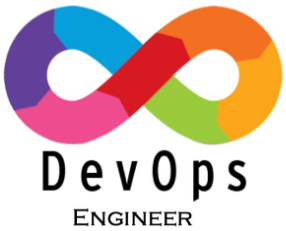

9 Jobs
Software Engineer
An IT professional who designs, develops and maintains computer
software at a company. They use their creativity and technical
skills and apply the principles of software engineering
More Details
1 open-position

Devops Engineer
Build, test and maintain infrastructure and tools. DevOps is a
series of practices and processes that help organisations speed up
and automate aspects of developing, testing, releasing and updating
software
More Details
1 open-position
cloud Engineer
highly skilled professional responsible for designing, developing,
and managing cloud-based infrastructure, applications, and services.
Cloud computing enables organizations to optimize IT resources,
More Details
1 open-position
Data Analyst
Responding to data-related queries, setting up processes to make
data more efficient, analyzing and interpreting trends from the
data, and reporting trends to add business value.
More Details
1 open-position
Software Testing
Checks for errors and gaps and whether the outcome of the
application matches desired expectations before the software is
installed and goes live.
More Details
1 open-position

Front-end Developer
To ensure that website visitors can easily interact with the page.
They do this through the combination of design, technology and
programming to code a website's appearance, and taking care of
debugging.
More Details
1 open-position
Software Developer
Researching,designing,building,and managing computer and application
software.They apply scientific and technological principles to user
needs,write code,and ensure software functionality.
More Details
1 open-position
Quality Analyst
Manufacturing companies identify inefficiencies in their production
processes, allowing them to optimize and streamline their
operations. By analyzing data on production times.
More Details
1 open-position
Business Analytics
Transforming data into insights to improve business decisions. Data
management, data visualization, predictive modeling, data mining,
forecasting simulation, and optimization
More Details
1 open-position